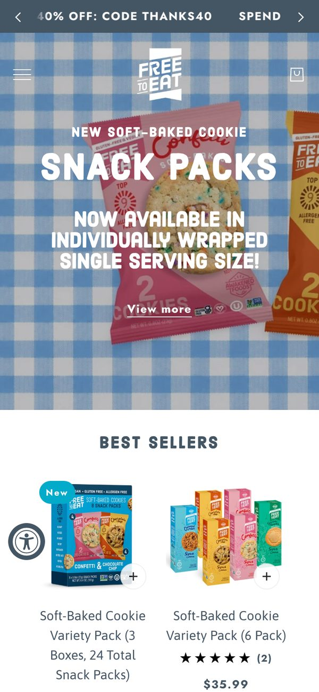
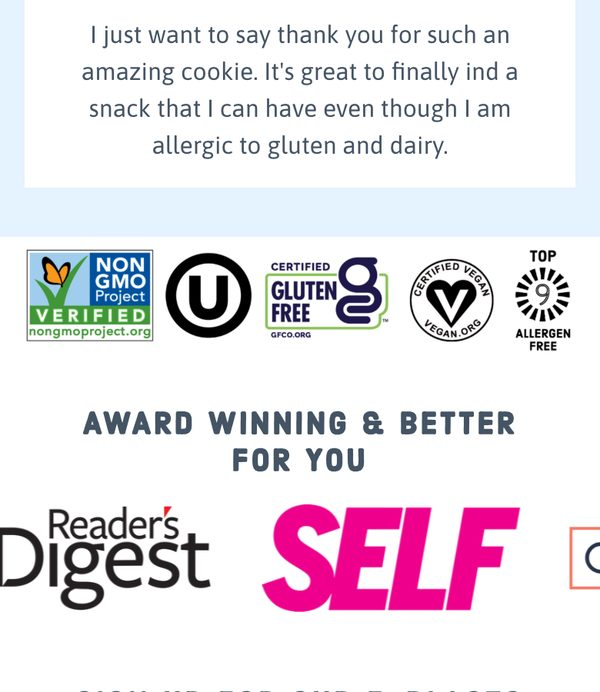
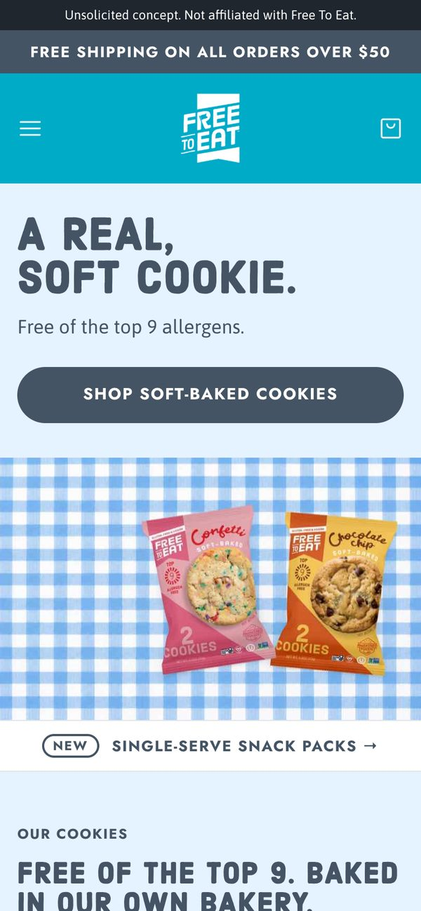
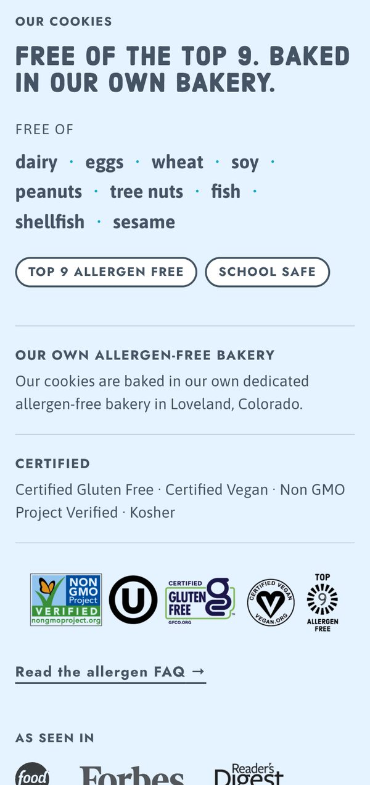
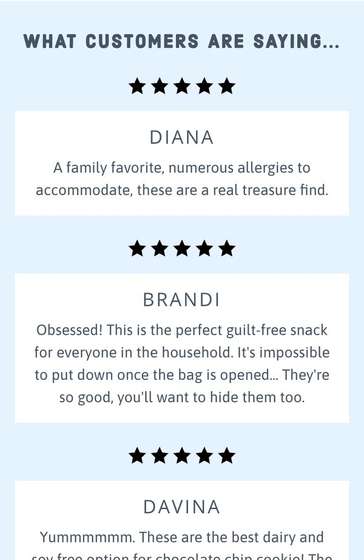
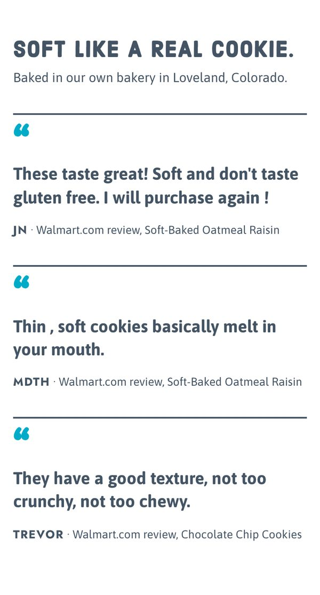
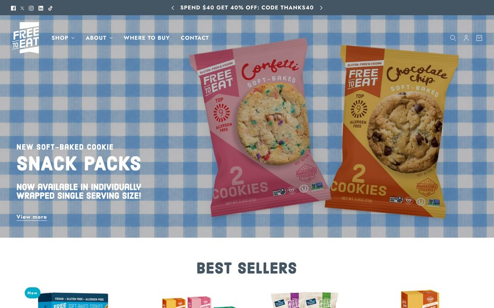
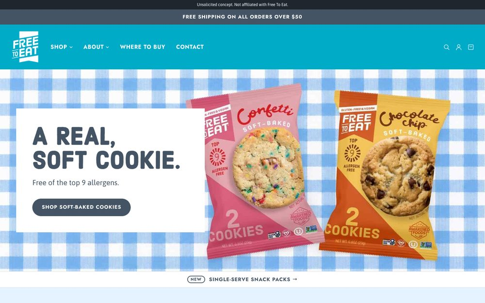
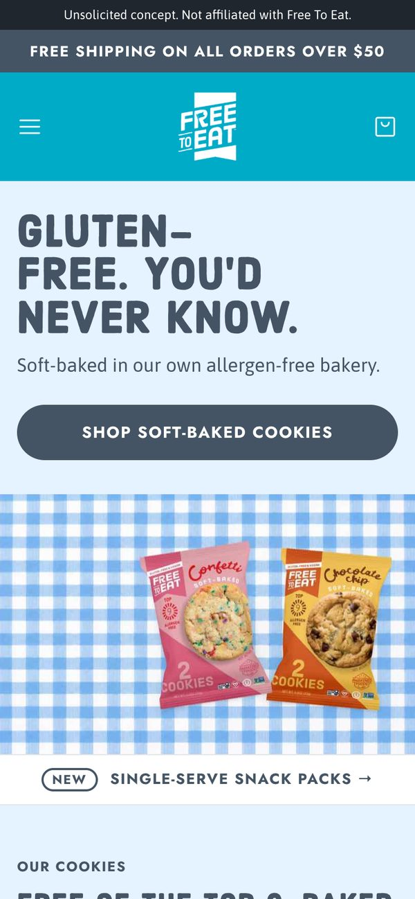

Free To Eat: putting the cookie and the proof above the fold
Unsolicited concept. Not affiliated with Free To Eat. Self-initiated, no client.
- Free To Eat bakes allergen-free cookies in its own bakery in Loveland, Colorado. Its homepage opens on a pack-size launch notice, and the allergen proof is a logo image about three quarters of the way down.
- I audited the page, ranked three hypotheses with ICE, rebuilt the homepage around them and wrote the test plan before anything ran.
- Not run. I have no access to Free To Eat's traffic, so there is no result to report.
- Live before and after pages are below, plus a hero variant for gluten-free adults.
Situation
Free To Eat (Cybele's Free To Eat, part of Awakened Foods) sells soft-baked and mini cookies plus a line of grain pops. Its FAQ says: "Our products are free from the Top 9 Allergens, which are dairy, eggs, wheat, soy, peanuts, tree nuts, fish, shellfish, and sesame." Its About page says the founders "eventually built our own allergen-free bakery in Loveland, just outside of Boulder, Colorado." No competitor I looked at makes that bakery claim.
The homepage uses neither line. I cloned it (26 Nov 2026) into a Next.js build and redesigned a copy, so both pages below run on the same code.
What I found
Sources: the live page and its HTML, 33 Free To Eat reviews from Walmart and Amazon (the site shows no review text), and competitor homepages.
1. The first screen fails a 5-second test
The hero reads "New soft-baked cookie / Snack Packs / Now available in individually wrapped single serving size!" with a "View more" link. It says what's new, not what the brand is or who it's for. "TOP 9 ALLERGEN FREE" appears only as the seal printed on the pack in the photo, and the only <h1> on the page is the logo.


2. The proof is a picture near the bottom
Gluten-free, vegan, kosher, non-GMO and top 9 certifications sit in one flat logo image about 75% of the way down. The words exist only in its alt text, and the bakery isn't mentioned on the homepage at all. The press strip under it has no heading and empty alt text.


3. The allergen claim changes wording from page to page
The pack says "TOP 9 ALLERGEN FREE". The product page says "Baked in a dedicated gluten-free facility free of the top 9 allergens." The FAQ says "Our cookies are manufactured in a dedicated allergen-free facility that is free from the Top 9 Allergens", for cookies only. The homepage calls the pops "Allergy-friendly" and nothing says where they're made. For a shopper managing an allergy, four versions of the claim give four reasons to doubt it. The redesign uses one wording, for cookies only.
4. Mobile takes 12.7 seconds to show its largest element
PageSpeed (Lighthouse) on the live site: mobile performance 60, LCP 12.7s, against 1.7s on desktop. The hero image is already set to load eagerly with high priority, so the delay is more likely the render path: a blocking Typekit stylesheet for the display font and 47 script tags.
5. Four offers in one bar
The announcement bar rotates free shipping over $50 with THANKS30, THANKS40 and THANKS50 codes. The shipping policy doesn't mention the $50 threshold, and there's a separate 10% email offer below.
Before and after
Both pages are static exports of the same build, so you can scroll and click around them. Links to products point at the live store. The redesign keeps the brand's gingham, colours and type, and leaves the pops section as it is.
First phone screen H1


Allergen proof H2


Taste proof H3




Desktop, first screen




Speed
On a local stand-in test, mobile LCP went from 14.7s on the clone to 1.7s on the redesign. This is not a Lighthouse score: Lighthouse wasn't installed, so I measured over Chrome DevTools Protocol at 390px with 4x CPU slowdown and slow 4G (150ms RTT, 1.6 Mbps), cache off, median of 3 runs. In both builds the LCP element is the hero image. The redesign serves a 39 KB, 900px-wide JPG through a preload instead of the 452 KB original, and puts the headline text first on mobile.
Ad to page: gluten-free adults
The largest buyer group in Free To Eat's own reviews is adults who eat gluten-free, dairy-free or vegan, or their partners (7 of 33). Across the brand and its competitors, 13 reviews say some version of "tastes like a regular cookie".
"These taste great! Soft and don't taste gluten free. I will purchase again !"jn, Walmart.com review, Soft-Baked Oatmeal Raisin
So the hook is "Gluten-free. You'd never know." The page variant swaps the hero only: that headline, the subline "Soft-baked in our own allergen-free bakery." and the same "Shop soft-baked cookies" button. Everything below the hero matches the base redesign, so an ad split tests the message alone. I'd judge it on cost per add-to-cart against the base redesign, same ad.


Two angles I rejected
- Allergy parents and school lunches: only 2 of 33 Free To Eat reviews, and nobody mentions school. Most of that evidence comes from competitors.
- The whole household: 6 reviews, the thinnest evidence of the three.
Hypotheses
Three carried forward, each built as its own block on the page so they can be tested one at a time.
H1A promise hero
Replacing the launch notice with "A real, soft cookie.", a live-text top 9 line and a "Shop soft-baked cookies" button will send more homepage visitors to a product page.
H2Proof under the hero
A proof band with one claim wording, the nine allergens named, the Loveland bakery and the certifications in text will raise the conversion rate of sessions that start on the homepage.
H3Taste proof, moved up
Three credited reviews about softness and taste, high on the page, will raise add-to-cart rate. Dry or stale is the most common complaint in the category reviews (14 mentions), and the current page never answers it.
How I ranked them
Each scored 1 to 10 on Impact, Confidence (how many reviews and competitors back the claim) and Ease (homepage change only, no new tools). The score is the plain average.
| ID | Hypothesis | Primary metric | I | C | E | Score |
|---|---|---|---|---|---|---|
| H1 | Promise hero, top 9 line, cookie CTA | Homepage → PDP click-through | 7 | 7 | 9 | 7.7 |
| H2 | Proof band under the hero | CVR, homepage-start sessions | 8 | 6 | 8 | 7.3 |
| H3 | Three taste quotes, moved high | Add-to-cart rate, homepage sessions | 6 | 6 | 7 | 6.3 |
| n/a | Quick-add on product cards | Not carried | 5.3 |
Result
Not run. No traffic access.
The plan, written before anything goes live. Each test runs 50/50 by visitor on homepage entrances, with a fixed horizon and no peeking. Baselines are my assumptions, not Free To Eat's numbers; with the brand's data I'd replace them and rerun. Two-proportion z-test, α 0.05, power 0.8.
| Test | Primary metric | Assumed baseline → target | Visitors per arm |
|---|---|---|---|
| H1 | Homepage → PDP click-through | 30% → 33% (+10%) | 3,763 |
| H2 | CVR, homepage-start sessions | 2.0% → 2.3% (+15%) | 36,693 |
| H3 | Add-to-cart rate, homepage sessions | 6.0% → 6.6% (+10%) | 25,740 |
weeks = visitors needed ÷ weekly homepage sessions
Each test stops once both arms reach their number and at least two full weeks have run. If that would take more than 8 weeks, I wouldn't start it.
Shipped without a test
- One offer in the bar (free shipping over $50) instead of four.
- One brand name and one support email; the parent company moves to a footer line.
- Section order: promise, proof, products, taste, pops, story and FAQ. The Whole Foods push becomes one line near the bottom.
- Hero image preloaded at 39 KB, headline text first on mobile.
Unsolicited concept. Not affiliated with Free To Eat. Product photos and review quotes belong to their owners and are shown only to illustrate the redesign. Back to the portfolio